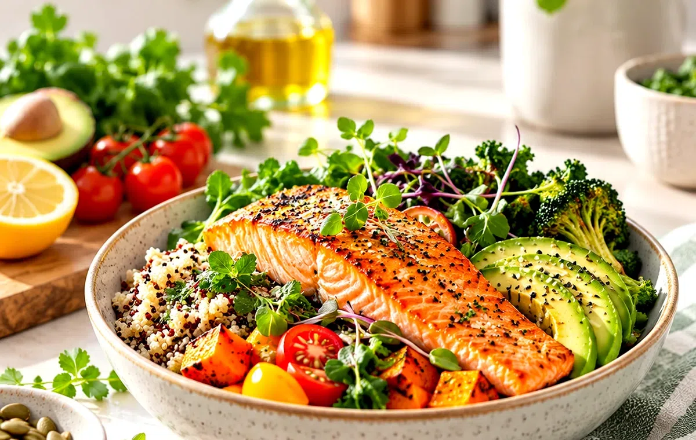
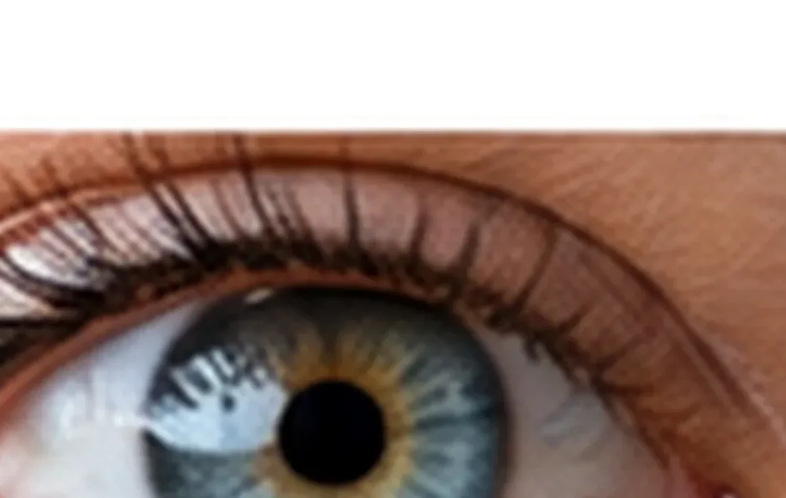
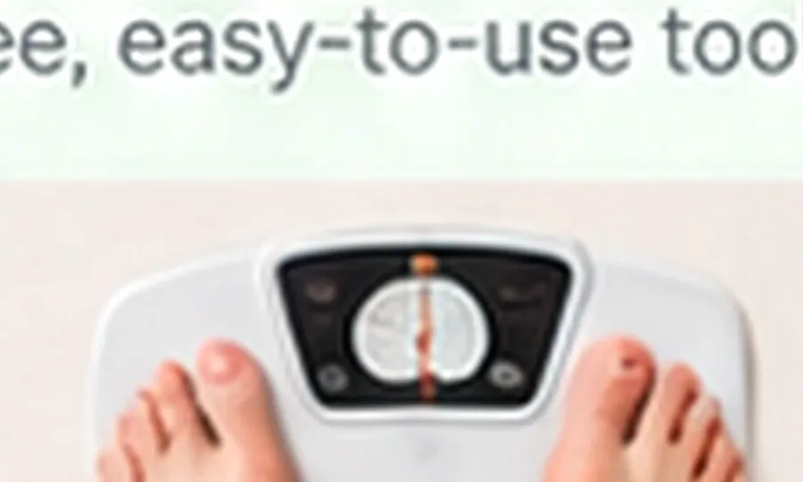
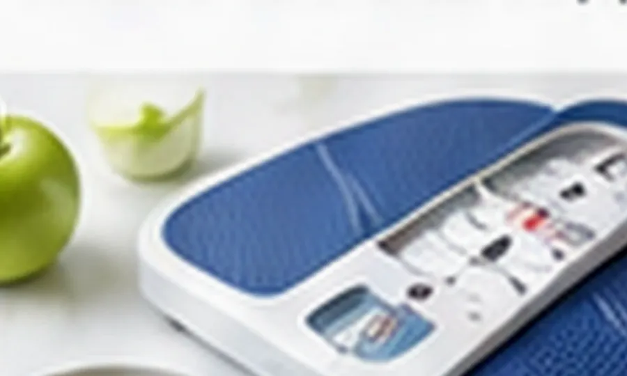
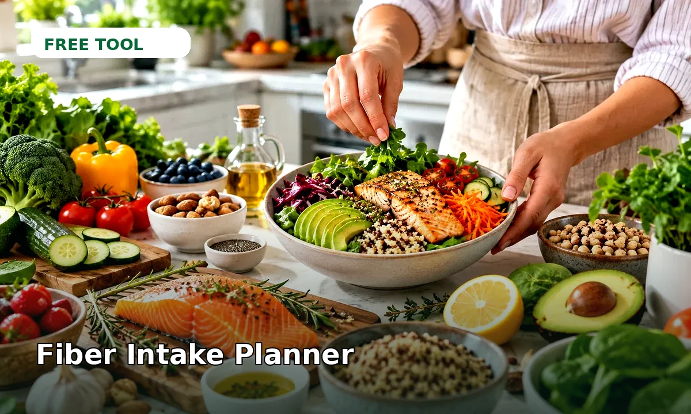
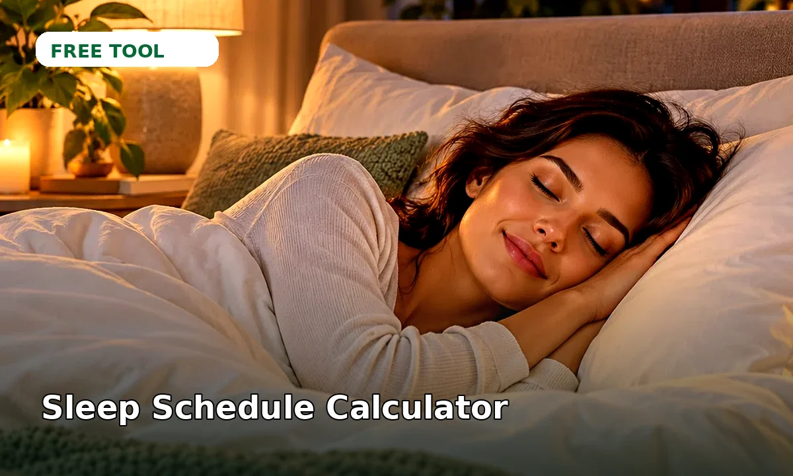
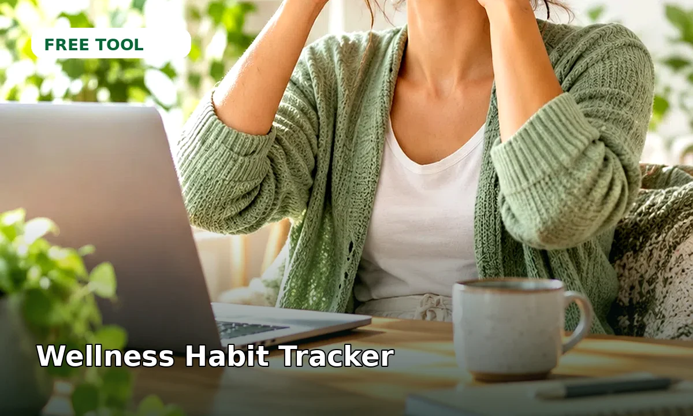

Daily Vitality Tools
Wellness planning tools designed to be clear, attractive and easy to use.

Nutritional Yeast Guide
Discover vegan recipes and uses for nutritional yeast. Learn what it is and how to use it in your cooking.

Mindful Meal Planner
Plan a week of balanced, whole-food meals tailored to your preferences and goals. Focus on mindful eating for a healthier you.

Sleep Hygiene Checklist
Improve your sleep with personalized tips based on your bedtime routine and environment. Educational only, not medical advice.

Hydration Calculator & Reminder
Calculate your daily hydration goal and set reminders to drink water. Educational estimate, not medical advice.

Hair Health: Growth & Shine Nutrient Checker
Check key vitamins and minerals in common foods beneficial for hair growth and shine. Educational only, not medical advice.

Boundary Builder: Communication Style Quiz
Discover your communication style and get personalized tips for setting healthy boundaries with our quick quiz. Educational only, not medica

Fruit & Veggie Nutrient Comparison Tool
Compare the nutritional highlights of two fruits or vegetables side-by-side. Make informed choices for your daily vitality.

Egg-cellent Protein & Micronutrient Breakdown
Estimate protein, vitamins (B12, D), and minerals (selenium) from eggs consumed. Educational only, not medical advice.

Habit Stacker Builder
Effortlessly build new habits by stacking them onto your existing daily routines. Get personalized suggestions for seamless integration.

Mindful Micro-Break Planner
Plan rejuvenating micro-breaks into your day with our easy-to-use planner. Get personalized suggestions based on your schedule and desired f

Energy Level Predictor
Estimate your daily energy curve based on sleep, meals, and activity. Educational only, not medical advice.

Digital Detox Timer
Set screen-free periods and get gentle reminders to disconnect and recharge. Your practical guide to digital wellness.

Heart Rate Zone Calculator
Find your maximum heart rate and training zones for walking, running and cardio workouts.

Daily Steps & Walking Goal Planner
Build a gradual plan to reach your daily step goal without overdoing it.

Healthy Weight Range Calculator by Height
See the healthy weight range for your height using the standard BMI range of 18.5 to 24.9.

Percentage Calculator
Calculate percentages, percentage of a number and percentage change quickly.

Morning Routine Builder
Build your perfect morning routine. Input your wake-up time and activities to get a personalized checklist. Educational estimate, not medica

Workout Timing Optimizer
Find your ideal morning workout slot based on your wake-up and sleep times for sustained energy. Educational estimate, not medical advice.

Nutrient Spotlight: Sweet Potato
Discover the key health facts and nutritional benefits of sweet potatoes in an easy-to-read format. Educational only, not medical advice.

Hydration Needs Estimator
Estimate your daily fluid intake based on activity level and climate. Educational only, not medical advice.
Mood Tracker: Daily Emotional Check-in
Track your daily mood, add notes, and visualize your emotional trends over time with this simple, private tool. Educational only, not medica

Stress Resilience: Quick Self-Assessment
Assess your stress resilience with a quick self-assessment. Get a personalized score and actionable tips for improving your daily well-being

Workplace Wellness: Desk Setup Optimizer
Optimize your desk, chair, and monitor setup for better ergonomics and comfort. Prevent strain with personalized recommendations.

Mindful Moment: Guided Mini-Break Timer
Refresh your focus with a guided mini-break. Set your time and get a simple mindfulness exercise or stretch sequence.

Daily Water Intake Calculator
Estimate how much water you should drink each day based on your weight, activity and climate.

Sleep Cycle Bedtime Calculator
Find the best time to go to bed so you wake up at the end of a sleep cycle and feel more refreshed.

Daily Protein Intake Calculator
Work out how many grams of protein you need per day for general health, training or muscle gain.

Daily Calorie Needs Calculator (BMR & TDEE)
Estimate your basal metabolic rate and daily calories to maintain, lose or gain weight.
NEW FREE TOOLResting Heart Rate Log
Save simple resting-pulse entries in this browser.
NEW FREE TOOLScreen Break Reminder
Run a simple screen-break timer while this page is open.
NEW FREE TOOLDaily Energy Check-In
Reflect on sleep, hydration, meals, movement and stress.

Supplement Schedule Builder
Create a simple local reminder list for supplements you already use.
NEW DAILY-USE TOOLMeal Balance Checker
Build a simple plate-balance score.
NEW DAILY-USE TOOLSimple Skin Routine Builder
Build a gentle morning or evening routine.
NEW DAILY-USE TOOLSupplement Timing Planner
Organize a simple reminder schedule.
NEW DAILY-USE TOOLDaily Symptom Check-In
Save private local notes and patterns.
POPULAR DAILY HEALTH TOOLWellness Focus Finder
Four quick questions to point you toward a realistic starting area: sleep, stress, nutrition or movement.
POPULAR DAILY HEALTH TOOLHair & Scalp Routine Check
Review gentle care habits and signs that may deserve professional evaluation.

Color Vision & Contrast Check
Screen-based color and contrast challenge with a non-diagnostic performance score.
POPULAR NEW TOOLHearing & Speech Check
Listen to spoken words and see a device-based speech recognition screening score.
POPULAR NEW TOOLIQ-Style Mind & Logic Challenge
Ten logic and pattern questions with a Mind Challenge Score — not a clinical IQ score.
POPULAR NEW TOOLDoctor Visit Prep
Organize symptoms, medicines, allergies and appointment questions into a printable summary.
NEW FREE TOOLWind-Down Checklist Builder
Build and save a simple evening checklist you can reuse before bed.
NEW FREE TOOLDesk Break Timer
A simple focus-and-movement timer that alternates work blocks with short desk breaks.

Bmi Calculator
Open this browser-based Daily Vitality tool.
FREE TOOLBreathing Exercise Timer
Open this browser-based Daily Vitality tool.
FREE TOOLDaily Planner
Open this browser-based Daily Vitality tool.
FREE TOOLDaily Routine Builder
Open this browser-based Daily Vitality tool.

Fasting Window Timer
Open this browser-based Daily Vitality tool.

Fiber Intake Planner
Open this browser-based Daily Vitality tool.
FREE TOOLFocus Timer
Open this browser-based Daily Vitality tool.
FREE TOOLGoal Tracker
Open this browser-based Daily Vitality tool.
FREE TOOLGrocery Planner
Open this browser-based Daily Vitality tool.
FREE TOOLHealthy Plate Builder
Open this browser-based Daily Vitality tool.
FREE TOOLHow To Create A Five Minute Journal Habit
Open this browser-based Daily Vitality tool.
FREE TOOLMeal Planner
Open this browser-based Daily Vitality tool.
FREE TOOLMeal Timing Planner
Open this browser-based Daily Vitality tool.
FREE TOOLMeditation Timer
Open this browser-based Daily Vitality tool.
FREE TOOLMini Pdf Book Builder
Open this browser-based Daily Vitality tool.
FREE TOOLMood Journal
Open this browser-based Daily Vitality tool.
FREE TOOLProtein Intake Planner
Open this browser-based Daily Vitality tool.
FREE TOOLQuick Notes
Open this browser-based Daily Vitality tool.
FREE TOOLSleep Debt Calculator
Open this browser-based Daily Vitality tool.

Sleep Schedule Calculator
Open this browser-based Daily Vitality tool.
FREE TOOLSodium Checker
Open this browser-based Daily Vitality tool.
FREE TOOLSteps Walking Planner
Open this browser-based Daily Vitality tool.
FREE TOOLTemplate Builder
Open this browser-based Daily Vitality tool.
FREE TOOLWater Intake Planner
Open this browser-based Daily Vitality tool.
FREE TOOLWeekly Planner
Open this browser-based Daily Vitality tool.

Wellness Habit Tracker
Open this browser-based Daily Vitality tool.